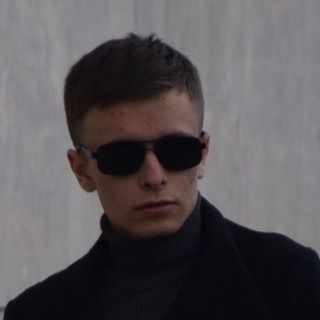

Роман
Мои проекты. Открываются прямо в браузере — ничего не нужно устанавливать.
-
Взаимноаналог Tinder
Сайт знакомств с глубокими анкетами и подбором по интересам. Свайпы ради встреч, а не ради свайпов.
Открыть -
Teagramаналог Telegram
Быстрый веб-мессенджер: чаты, группы, каналы и боты — прямо в браузере.
Открыть -
SocialHubаналог YouTube и Instagram
Длинные видео, короткие reels, фото и истории — в одном приложении.
Открыть